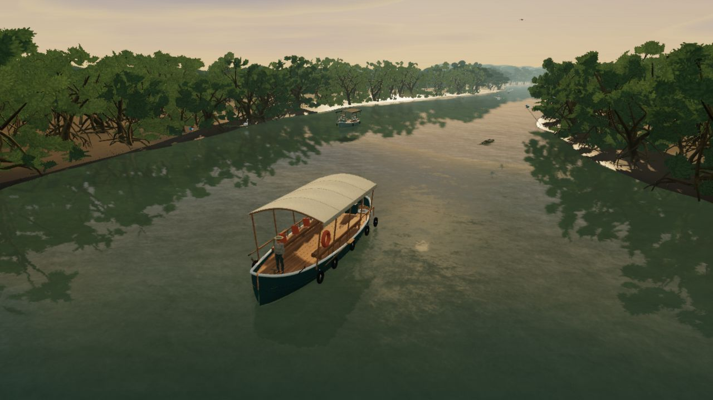
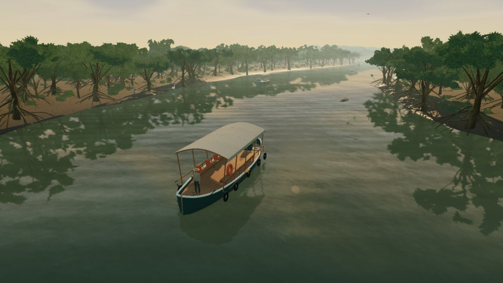

Drag the divider to compare the previous version with the new art pass. These are direct browser captures with the same camera, boat position, lighting preset and 1280 × 720 render resolution.


BEFOREAFTER
Fixed simulation time: 42 s. Storms developed for 25 s through the weather simulation. Ambient traffic can differ; these comparisons isolate framing and lighting rather than identical traffic positions.